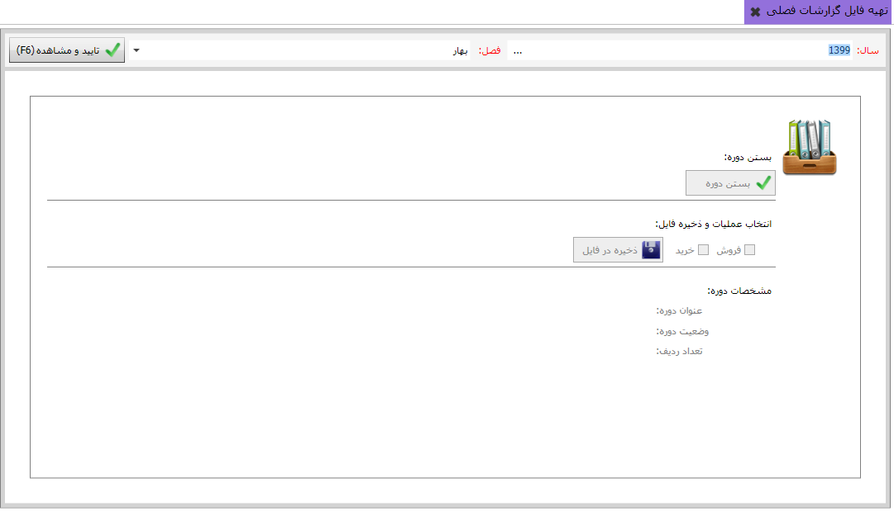

بعد از تکمیل بخش اطلاعات پایه گزارشات فصلی و تنظیم گزارشات فصلی نوبت به تهیه ی فایل گزارشات می رسد ، تصویر زیر را مشاهده بفرمایید:
در تصویر بالا ابتدا در سربرگ صفحه، سال و فصل مورد نظر خود راانتخاب کنید، سپس با استفاده از کلید بستن دوره، دوره را ببندید، در نهایت با کلیک بر روی کلید ذخیره در فایل، فایل مورد نظرتان را در مسیر دلخواه ذخیره کنید.